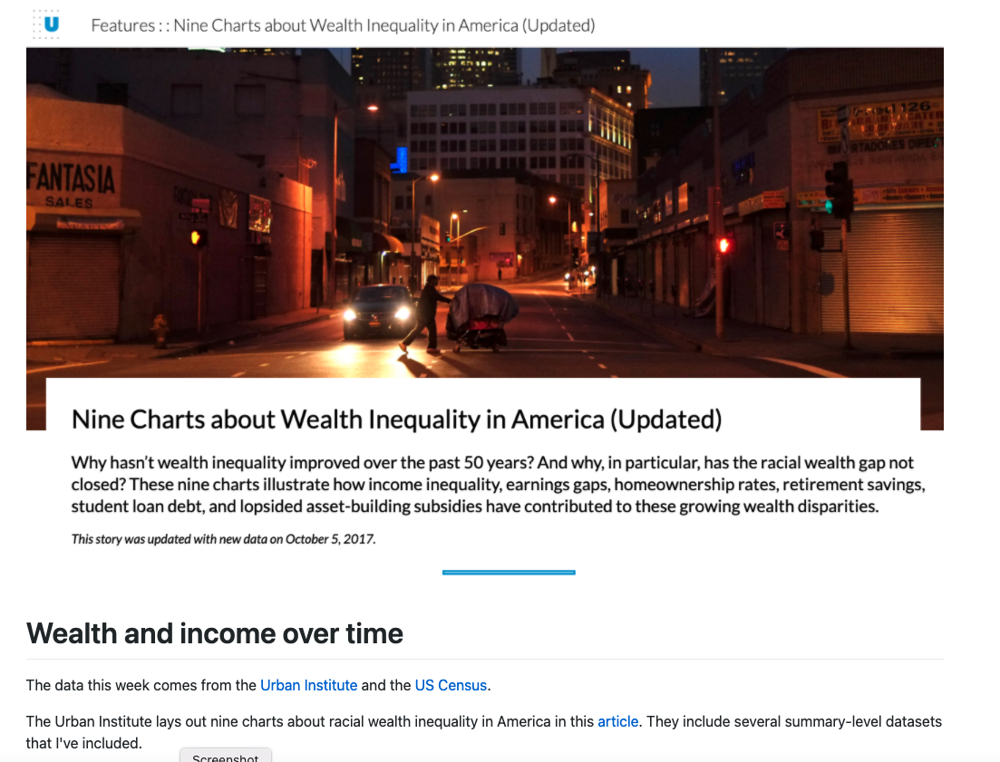

Code
library(tidyverse)
library(readr)
library(hrbrthemes)library(tidyverse)
library(readr)
library(hrbrthemes)
tidyTuesday for the week of February 8, 2021 brings data from the US Census and the Urban Institute together to think about income, wealth, and racial inequality in these and other important economic indicators. There is a lot of data that they make available to accompany the nine charts about wealth inequality that they reported here. There is considerable variation in the scope and coverage of the various datasets; I will start by loading the ten datasets.
lifetime_earn <- readr::read_csv('https://raw.githubusercontent.com/rfordatascience/tidytuesday/master/data/2021/2021-02-09/lifetime_earn.csv')
student_debt <- readr::read_csv('https://raw.githubusercontent.com/rfordatascience/tidytuesday/master/data/2021/2021-02-09/student_debt.csv')
retirement <- readr::read_csv('https://raw.githubusercontent.com/rfordatascience/tidytuesday/master/data/2021/2021-02-09/retirement.csv')
home_owner <- readr::read_csv('https://raw.githubusercontent.com/rfordatascience/tidytuesday/master/data/2021/2021-02-09/home_owner.csv')
race_wealth <- readr::read_csv('https://raw.githubusercontent.com/rfordatascience/tidytuesday/master/data/2021/2021-02-09/race_wealth.csv')
income_time <- readr::read_csv('https://raw.githubusercontent.com/rfordatascience/tidytuesday/master/data/2021/2021-02-09/income_time.csv')
income_limits <- readr::read_csv('https://raw.githubusercontent.com/rfordatascience/tidytuesday/master/data/2021/2021-02-09/income_limits.csv')
income_aggregate <- readr::read_csv('https://raw.githubusercontent.com/rfordatascience/tidytuesday/master/data/2021/2021-02-09/income_aggregate.csv')
income_distribution <- readr::read_csv('https://raw.githubusercontent.com/rfordatascience/tidytuesday/master/data/2021/2021-02-09/income_distribution.csv')
income_mean <- readr::read_csv('https://raw.githubusercontent.com/rfordatascience/tidytuesday/master/data/2021/2021-02-09/income_mean.csv')There is not all that much data here. Six values for the cross-tabulation of race and gender.
lifetime_earn %>%
ggplot() +
aes(x=race, y=lifetime_earn/1000000, fill=race) +
geom_col() + coord_flip() +
facet_wrap(vars(gender)) +
scale_fill_viridis_d() + theme_ipsum_tw() +
labs(y="Lifetime Earnings [in millions]")Combining the categories offers a considerably improved visual in my view.
lifetime_earn %>%
mutate(Categ = paste(race,gender,sep=":")) %>%
ggplot() +
aes(x=Categ, y=lifetime_earn/1000000, fill=race, color=race, label=lifetime_earn/1000000, alpha=0.2) +
geom_col() + geom_text(size=3, color="white", alpha=1) +
coord_flip() + scale_color_ipsum() + scale_fill_ipsum() +
theme_modern_rc() +
labs(y="Lifetime Earnings [in millions]", x="Race:Gender") +
guides(fill=FALSE, color=FALSE, alpha=FALSE)lifetime_earn %>%
mutate(Categ = paste(gender,race,sep=":")) %>%
ggplot() +
aes(x=Categ, y=lifetime_earn/1000000, fill=race, color=race, label=lifetime_earn/1000000, alpha=0.2) +
geom_col() + geom_text(size=3, color="white", alpha=1) +
coord_flip() + scale_color_ipsum() + scale_fill_ipsum() +
theme_modern_rc() +
labs(y="Lifetime Earnings [in millions]", x="Race:Gender") +
guides(fill=FALSE, color=FALSE, alpha=FALSE)The student debt data is not super extensive. At three year intervals, we see growth across categories but higher levels and rates are notable by racial category. A line plot is a good place to start.
student_debt %>% ggplot() +
aes(x=year, y=loan_debt_pct, color=race) +
geom_line() + geom_point(size=3) +
scale_color_viridis_d() +
labs(y="Share of Families with Student Loan Debt") +
theme_ipsum_rc()
A faceted bar plot.
student_debt %>% ggplot() +
aes(x=race, y=loan_debt_pct, fill=race) +
geom_col() + scale_color_viridis_d() +
labs(y="Share of Families with Student Loan Debt") +
guides(fill=FALSE) + theme_ipsum_rc() +
coord_flip() + facet_wrap(vars(year))Liquid retirement savings offer an interesting basis for comparison.
retirement %>% ggplot() +
aes(x=year, y=retirement, color=race) +
geom_line() + geom_point() +
scale_color_ipsum() + theme_ipsum_rc() +
labs(y="Liquid Retirment Savings", color="Race")knitr::write_bib(names(sessionInfo()$otherPkgs), file="bibliography.bib")